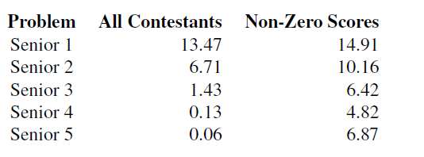
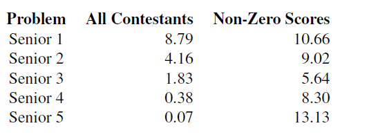
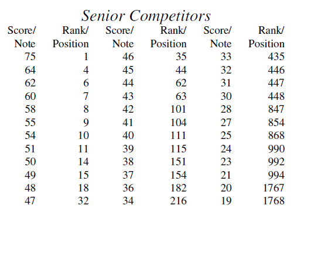
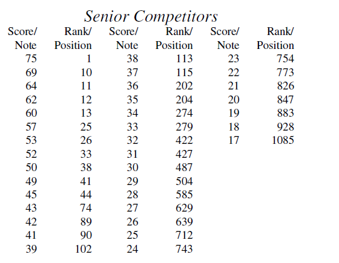

Back
CCC 2020
March 25, 2020
This year's Canadian Computing Competition was held on February 12, 2020. Here I will dissect the results of the Senior Division.
Contest Analysis
 CCC 2019 (first image) vs CCC 2020 (second image) stats
This year's S1 and S2 average scores were significantly lower than last year's. This is because the difficulty of these early problems has increased. S3 had a higher average score but a lower non-zero average score. I'm not sure what to make of this, but I know that the nature of this year's S3 is different. Last year's S3 tested the contestant's ability to come up with an ad hoc solution and then debug it. This is in sharp contrast to this year's S3 which simply tested for knowledge of string algorithms. As seen in the non-zero scores, this year's S4 and S5 were easier than those of last year. While last year's S4 and S5 tested involved programming concepts, solving this year's S4 relied solely on a few observations and this year's S5 did not make heavy use of programming concepts either.
 CCC 2019 (first image) vs CCC 2020 (second image) stats
Due to an easier S4 and S5, the 2020 CCO cut-off is 57 and 25 contestants have been invited. In comparison, last year's cut-off was 48 and 31 were invited.
Although this year's Honour Roll cut-off is 37, which is lower than last year's 39, we need to consider that there are 201 contestants on the 2020 Honour Roll while there were only 150 last year.
Congratulations to all the contestants who made the Honour Roll!
Problem Analysis
S1: Surmising a Sprinter's Speed
Sort the points by time. Then loop through each consecutive pair to find the constant speed over each interval. The answer is the highest of the speeds.
Solve time: 4 minutes
S2: Escape Room
Perform a depth-first search (DFS) on the cells. There are $N^2$ cells and individually finding the factors of each number has complexity $\mathcal{O}(\sqrt{max\_number})$. This results is an upper bound of $N^2 \cdot \sqrt{max\_number} = (10^3)^2 \cdot \sqrt{10^6} = 10^6 \cdot 10^3 \approx 10^9$ operations. Although it appears that this solution cuts close to the time limit, it passes with ease.
For a faster solution, observe that when the cell at $(i, j)$ has value $v$, a cell of product $i \cdot j$ can reach a cell of product $v$. Let us add an edge from node $i \cdot j$ to node $v$. The answer is "yes" iff there exists a path from node $1$ to node $n \cdot m$.
Time complexity: $\mathcal{O}(NM)$ or $\mathcal{O}(NM log 10^6)$.
Solve time: 8 minutes
S3: Searching for Strings
Let $S$ be a substring of $H$ with length $|N|$. To check whether $S$ is a permutation of $H$, keep a count of each of the 26 letters of the alphabet. If the counts of $S$ and $N$ all match, then they are permutations of each other. To do this quickly, loop through the $S$s from left to right. This way, only one character is gained and lost in each new substring. Time complexity: $\mathcal{O}(|H|)$.
What we want is the number of distinct substrings $S$ that are permutations of $N$. Let $T$ be the set of all such $S$. To eliminate duplicates, we need a quick way of comparing the elements of $T$. This can be done quickly by using a rolling hash (I used a double-hash with $131$ as my base and $1494318097$ and $1685518853$ as my mods). Now instead of inserting valid $S$s into $T$, we insert $hash(S)$s. The answer is the cardinality of $T$.
Final time complexity: $\mathcal{O}(|H|)$ or $\mathcal{O}(|H| log |H|)$.
Solve time: 14 minutes
S4: Swapping Seats
First, let us solve the problem where the table is linear rather than circular—the $1^{st}$ person and $N^{th}$ person are not adjacent. When we are done, segments of $A$, $B$, and $C$ type people will be contiguous. The order of the segments will either be $ABC$, $ACB$, $BAC$, $BCA$, $CAB$, or $CBA$. We can try all 6 permutations. In each permutation, the table is split into 3 segments that will eventually be occupied $A/B/C$ people. Let's call these “final groups”. If a person of group $X$ is already in the final group of $X$, there is no point in moving him/her. If an $X$ and a $Y$ person can end up in their correct final groups by swapping, then swap them. Otherwise, we will have a non-negative number of tuples of three people—one from each group—who can all end up where they need to be in 2 swaps. This algorithm is guaranteed to give the minimum number of swaps needed. Notice that all we care about is which group each person is from and which $A/B/C$ final segment he/she is currently in. If we go back to the circular case and everyone shifts left by one, only three people will get different final groups. Thus, we can shift the table $N$ times and check the swap count each time. The answer is the minimum of these.
Time complexity: $\mathcal{O}(N)$.
Solve time: 49 minutes
S5: Josh's Double Bacon Deluxe
Let $P_i$ be the probability that John does not get his burger if the $i^{th}$ person does not get his/her burger. The base case is $P_N = 0$. For all $i$, $ i\neq 1$, if $b_i = b_1$, $i$ will take the coach's burger and everyone after $i$ gets the correct burger. Otherwise, if there exists a person $j$ after $i$ who ordered the same burger as person $i$, person $i$ will take person $j$'s burger. In this case, $P_i = P_j$. Otherwise, $i$ will take a remaining burger at random. If $i$ takes the coach's burger, then everyone behind $i$ will get his/her own burger. Otherwise, if $i$ takes $j$'s burger, then the probability in this case is $P_j$. Here, $P_i = \frac{1 + \sum_{j = i+1}^{n} {P_j}}{n-i+1}$. We can also use this recurrence to calculate $P_1$, which is our final answer.
$$P_i=\begin{cases}
0& \text{if } i = N\\
1& \text{if } i \neq 1, b_i = b_1\\
P_j& \text{if } i \neq 1, \exists \text{ } j | j > i, b_j = b_i\\
\frac{1 + \sum_{j = i+1}^{n} {P_j}}{n-i+1}& \text{otherwise}
\end{cases}$$
Image of LaTeX render here.
Finding whether there exists a $j$ each time can be done in $\mathcal{O}(1)$ with a hash table. Finding the suffix sums of $P$ can be done in $\mathcal{O}(1)$ each time if we find $P_i$s in decreasing order of $i$.
Time complexity: $\mathcal{O}(N)$ or $\mathcal{O}(N log N)$.
Solve time: 55 minutes
{kind=link}
Summary
I enjoyed solving this year's CCC problems and I hope that you will enjoy them as well. My in-contest solutions in C++ are available here or at the bottom of the page.
Final score: 75/75 (1st place)
Total solve time: 130 minutes
// S1 solution in O(N log N)
#include <bits/stdc++.h>
using namespace std;
pair<double, double> a[100002];
int n;
double ans = 0;
void init(){
#ifndef ONLINE_JUDGE
freopen("in.txt", "r", stdin);
freopen("out.txt", "w", stdout);
freopen("err.txt", "w", stderr);
#endif
}
int main(){
init();
ios_base::sync_with_stdio(0);
cin.tie(0);
cout.tie(0);
cin>>n;
for(int i = 0; i < n; i++)
cin>>a[i].first>>a[i].second;
sort(a, a+n);
for(int i = 1; i < n; i++){
ans = max(ans, abs(a[i].second-a[i-1].second)/(a[i].first-a[i-1].first));
}
cout<<fixed<<setprecision(10)<<ans;
return 0;
}
// S2 solution in O(NM)
#include <bits/stdc++.h>
constexpr int MM = 1000001;
int n, m;
bool vis[MM];
std::vector<int> adj[MM];
void go(int u){
if(u == n){
puts("yes");
exit(0);
}
vis[u] = 1;
for(const int &i: adj[u])
if(!vis[i])
go(i);
}
int main(){
#ifndef ONLINE_JUDGE
freopen("in.txt", "r", stdin);
freopen("out.txt", "w", stdout);
freopen("err.txt", "w", stderr);
#endif
std::ios_base::sync_with_stdio(0);
std::cin.tie(0);
std::cin>>n>>m;
for(int i = 1,v,k; i <= n; i++){
k = i;
for(int j = 1; j <= m; j++, k += i){
std::cin>>v;
adj[k].emplace_back(v);
}
}
n *= m;
go(1);
puts("no");
exit(0);
}
// S3 solution in O(|H| log |H|)
#include <bits/stdc++.h>
using namespace std;
using ll = long long;
const int MM = 2e5+5;
int n, m, cnta[30], cntb[30];
char sa[MM], sb[MM];
set<pair<ll, ll>> st;
ll base = 131, mod = 1685518853;
ll base2 = 131, mod2 = 1494318097;
ll h[MM], p[MM], h2[MM], p2[MM];
void go(int j){
for(int i = 0; i < 30; i++)
if(cnta[i] != cntb[i])
return;
ll hs = ((h[j] - h[j-n]*p[n])%mod+mod)%mod;
ll hs2 = ((h2[j] - h2[j-n]*p2[n])%mod2+mod2)%mod2;
st.insert({hs, hs2});
}
int main(){
scanf("%s %s", sa+1, sb+1);
n = strlen(sa+1), m = strlen(sb+1);
p[0] = p2[0] = 1;
for(int i = 1; i <= m; i++){
p[i] = p[i-1]*base%mod;
h[i] = (h[i-1]*base + sb[i])%mod;
p2[i] = p2[i-1]*base2%mod2;
h2[i] = (h2[i-1]*base2 + sb[i])%mod2;
}
for(int i = 1; i <= n; i++){
cnta[sa[i]-'a']++;
cntb[sb[i]-'a']++;
}
go(n);
for(int i = n+1; i <= m; i++){
cntb[sb[i]-'a']++;
cntb[sb[i-n]-'a']--;
go(i);
}
printf("%ld\n", st.size());
return 0;
}
// S4 solution in O(N)
#include <bits/stdc++.h>
using namespace std;
const int MM = 1e6+2;
int n, cnt[3][3], ans = 1e9, num[3], na, nb, nc;
char s[MM], ins[MM];
int gp(int i){
if(i < na)
return 0;
if(i < na+nb)
return 1;
return 2;
}
int at(int i){
i %= n;
if(i < 0) i += n;
return i;
}
void go(){
int tot = n-cnt[0][0]-cnt[1][1]-cnt[2][2], res = 0;
for(int i = 0; i < 3; i++){
for(int j = 0; j < i; j++){
int sub = min(cnt[i][j], cnt[j][i]);
res += sub;
tot -= sub*2;
}
}
assert(tot % 3 == 0);
res += tot/3*2;
ans = min(ans, res);
}
int aa[] = {0, 1, 2};
void run(){
memset(num, 0, sizeof num);
memset(cnt, 0, sizeof cnt);
for(int i = 0; i < n; i++){
s[i] = aa[ins[i]];
num[s[i]]++;
}
na = num[0], nb = num[1], nc = num[2];
for(int i = 0; i < n; i++){
cnt[gp(i)][s[i]]++;
}
go();
for(int sh = 0; sh <= n; sh++){
cnt[0][s[at(na-1-sh)]]--;
cnt[1][s[at(na-1-sh)]]++;
cnt[1][s[at(na+nb-1-sh)]]--;
cnt[2][s[at(na+nb-1-sh)]]++;
cnt[2][s[at(n-1-sh)]]--;
cnt[0][s[at(n-1-sh)]]++;
go();
}
}
int main(){
//freopen("in.txt", "r", stdin);
scanf("%s", s);
n = strlen(s);
for(int i = 0; i < n; i++){
s[i] -= 'A';
ins[i] = s[i];
}
do{
run();
} while(next_permutation(aa, aa+3));
printf("%d\n", ans);
return 0;
}
// S5 solution in O(N log N)
#include <bits/stdc++.h>
using namespace std;
const int MM = 1e6+2;
int n, a[MM];
map<int, int> mp;
double dp[MM], suf;
int main(){
//freopen("in.txt", "r", stdin);
scanf("%d", &n);
for(int i = 1; i <= n; i++)
scanf("%d", a+i);
if(a[1] == a[n])
return printf("1\n"), 0;
mp[a[n]] = n;
for(int i = n-1; i > 1; i--){
if(a[i] == a[1]){
dp[i] = 1;
mp[a[i]] = i;
}
else if(mp[a[i]])
dp[i] = dp[mp[a[i]]];
else
dp[i] = (suf+1)/(n-i+1);
mp[a[i]] = i;
suf += dp[i];
}
printf("%.8lf\n", accumulate(dp+2, dp+n, 1.0)/n);
return 0;
}